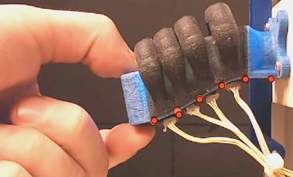

Color-Based Proprioception of Soft Actuators Interacting with Objects
IEEE/ASME Transactions on Mechatronics, 2019
| Rob B.N. Scharff, Rens M. Doornbusch, Zjenja Doubrovski, Jun Wu, Jo M.P. Geraedts, Charlie C. L. Wang |
| Department of Design Engineering, TU Delft |
| Department of Mechanical and Automation Engineering, The Chinese University of Hong Kong |

Abstract
Actuators using soft materials feature a large number of degrees of freedom. This tremendous flexibility allows a soft actuator to passively adapt its shape to the objects under interaction. In this paper we propose a novel proprioception method for soft actuators during real-time interaction with priorly unknown objects. Firstly, we design a color-based sensing structure that instantly translates the inflation of a bellow into changes in color, which are subsequently detected by a miniaturized color sensor. The color sensor is small and thus multiple of them can be integrated into soft pneumatic actuators to reflect local deformations. Secondly, we make use of a Feed-forward Neural Network (FNN) to reconstruct a multivariate global shape deformation from local color signals. Our results demonstrate that deformations of the actuator during interaction, including the sigmoid-like shapes, can be accurately reconstructed. The accurate shape sensing represents a significant step towards closed-loop control of soft robots in unstructured environments.Download
 |
Paper MB |
Related Projects
Reducing Out-of-Plane Deformation of Soft Robotic Actuators for Stable Grasping
Bibtex
@article{Scharff2019,
title = "Color-Based Proprioception of Soft Actuators Interacting with Objects",
journal = "IEEE/ASME Transactions on Mechatronics",
year = "2019",
volume = "24",
number = "5",
pages = "1964-1973",
doi = "https://doi.org/10.1109/TMECH.2019.2929818",
author = "Rob B.N. Scharff and Rens M. Doornbusch and Zjenja Doubrovski and Jun Wu and J.M.P. Geraedts and Charlie C. L. Wang"
}